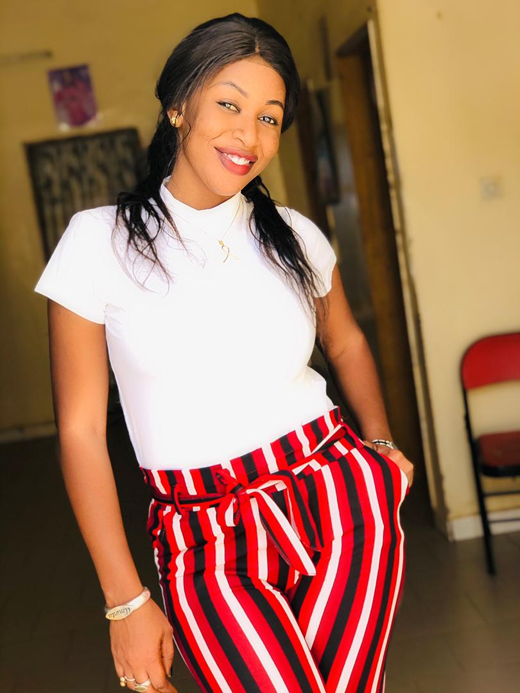

Mon CV
INFORMATIO GENERAL
AMINATA WADE
26ans Célibataire
aminatawade0312@gmail.com
Tel:779168417/771139152

FORMATION
Licence 3 | IMC Dakar
2018-2019Licence 3 en réseaux informatiques et télécommunications
Licence 2| IMC Dakar
2017 – 2018Licence 2 en réseaux informatiques et télécommunications
Licence 1| IMC Dakar
2016 – 2017Licence 1 en réseaux informatiques et télécommunications
Licence 2| UCAD
2015 – 2016Licence 2 en sciences économies et gestion
Licence 1 | UCAD
2014 – 2015Licence 1 en sciences économies et gestion
Baccalauréat Série S2| lycée Richard-Tol
2013 – 2014Lycée Richard-Toll
COMPETENCES
MySQL, Oracle, Access
Langages : HTML, CSS, PHP, MYSQL
Communications mobiles : Réseaux radio mobiles cellulaires publique (GSM, GPRS, EDGE, UMTS)
Architecture du réseau téléphonique commuté, Boucle Locale, PABX
MERISE, UML
Eclipse, Packet tracert
VMWare, Virtual Box
Windows (XP, Vista, 7, 8.1, 10), Linux
Windows serveur 2008, 2012 r2, 2016
World, Excel, PowerPoint, Access
Câblages réseaux, Protocole (TCP, IP, ICMP)
Architecture des réseaux et modèle OSI
Windows, Linux
Installation et configuration des serveurs (DHCP, DNS, IIS, FTP, POP3, IMAP4)
Configurer et maintenir Active Directory
CISCO CCNA Academy
EXPERIENCES PROFESSIONNELLE
PROJET ET TRAVAUX
Installation et configuration de tous les serveurs DHCP, DNS, FTP, IIS, POP3, IMAP4 et Active Directory
Projet mémoire de Fin d’étude premier cycle : Mise en place d’un VLAN sécurisé
LANGUES ETRANGErRES
• Anglais : Lu, écrit et parlé
• Arable : Lu, et écrit